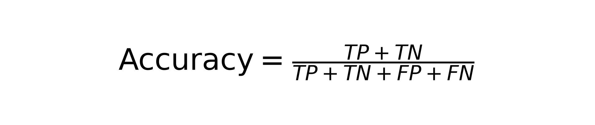
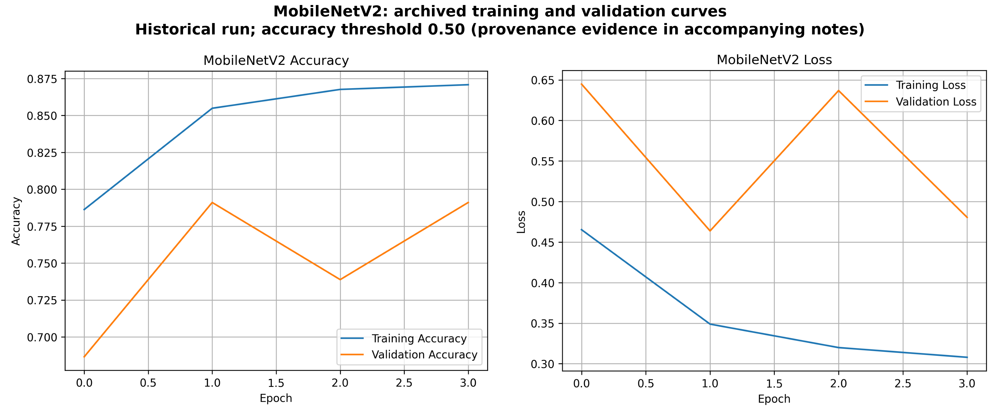
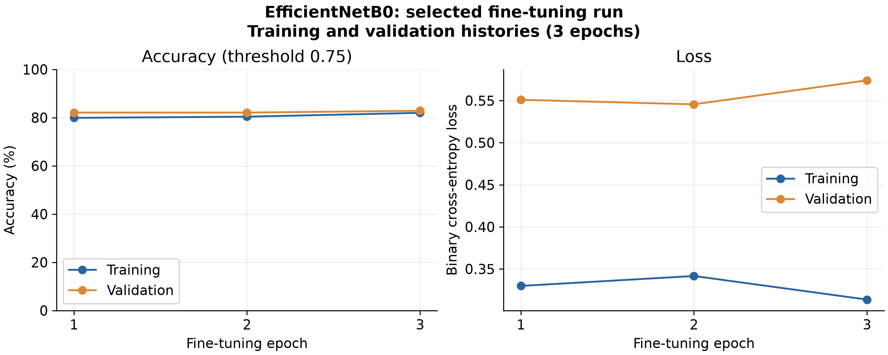
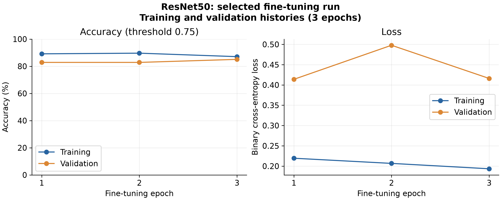
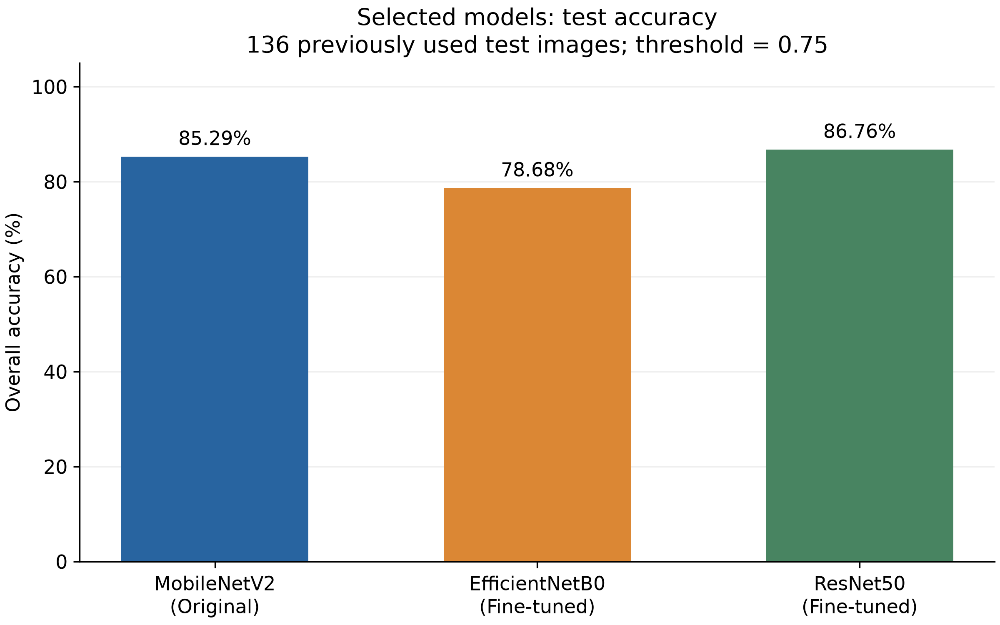
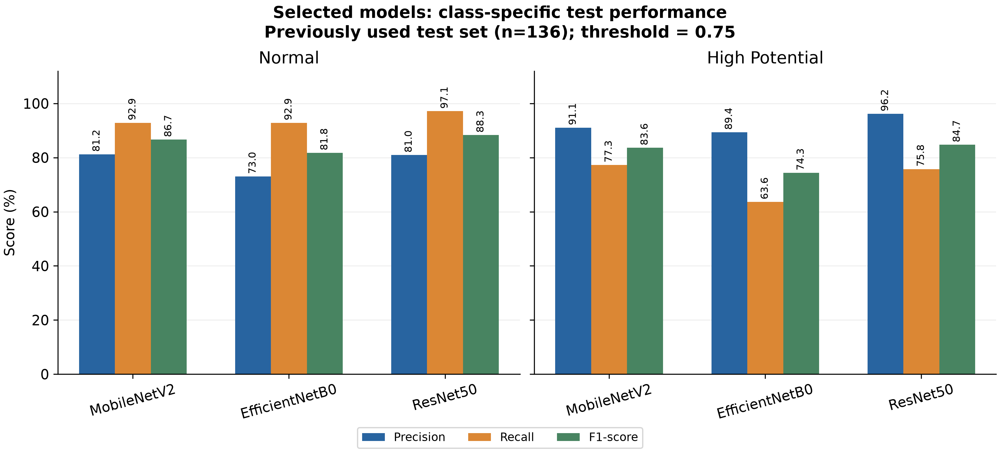

Copy the relevant content into your manuscript. All comparison results use the selected original MobileNetV2 and fine-tuned EfficientNetB0 / ResNet50, the previously used 136-image test split and a 0.75 threshold. See the source notes for training-curve provenance.

Figure 14. Formula for accuracy
Accuracy is the proportion of correctly classified test images. With High Potential treated as the positive class, TP and TN count correct High Potential and Normal predictions, respectively; FP counts Normal images predicted as High Potential, and FN counts High Potential images predicted as Normal.
Figure 15. Formula for precision
High Potential precision is the proportion of images predicted as High Potential that have the High Potential dataset label. Precision for the Normal class is calculated by treating Normal as the class of interest.
Figure 16. Formula for recall
High Potential recall is the proportion of High Potential test images correctly identified. Recall is also reported separately for Normal images.
Figure 17. Formula for F1-score
The F1-score is the harmonic mean of precision and recall for the class being evaluated. It summarizes both measures while retaining the need to examine false positives and false negatives.

Figure 18. Archived MobileNetV2 training and validation accuracy and loss
Figure 18 presents archived MobileNetV2 training and validation curves from the original training-results directory. Training accuracy rises across the recorded epochs while validation accuracy fluctuates, and training loss decreases while validation loss varies. The historical accuracy metric uses a 0.50 threshold. These curves should be distinguished from the selected model test evaluation at a 0.75 threshold. The archived model matches the selected test artifact by SHA-256; the graph-to-checkpoint link is supported by the training script and file records but no underlying numeric history was preserved to independently prove that link.

Figure 19. Training and validation accuracy and loss during EfficientNetB0 fine-tuning
Figure 19 shows the selected EfficientNetB0 fine-tuning run over three epochs. Training accuracy increases modestly, while validation accuracy changes slightly. Training loss fluctuates and ends lower, whereas validation loss is lowest at the second epoch and rises at the third. The selected weights were restored according to validation loss. The epoch accuracy metric uses a 0.75 threshold. These training and validation measurements are separate from the final 78.68% test accuracy.

Figure 20. Training and validation accuracy and loss during ResNet50 fine-tuning
Figure 20 shows the selected ResNet50 fine-tuning run over three epochs. Training loss decreases, while validation loss rises at the second epoch and then decreases. Validation accuracy is stable initially and increases at the third epoch. Model weights were selected according to validation loss, so the final epoch should not automatically be treated as the selected checkpoint. The epoch accuracy metric uses a 0.75 threshold. These histories are separate from the selected model test accuracy of 86.76%.

Figure 21. Overall test accuracy of the selected CNN models
Figure 21 compares overall accuracy on the same 136 test images at a 0.75 threshold. The selected fine-tuned ResNet50 achieves 86.76%, the original MobileNetV2 achieves 85.29%, and the selected fine-tuned EfficientNetB0 achieves 78.68%. ResNet50 correctly classifies 118 images, MobileNetV2 116, and EfficientNetB0 107.

Figure 22. Class-specific test precision, recall and F1-score of the selected CNN models
Figure 22 compares precision, recall and F1-score separately for Normal and High Potential images. ResNet50 has the highest High Potential precision and F1-score, while MobileNetV2 has the highest High Potential recall. MobileNetV2 identifies 51 of 66 High Potential images, ResNet50 identifies 50, and EfficientNetB0 identifies 42. The graph labels use one decimal place; the results tables use two decimal places. These measurements describe this image split and do not establish clinical diagnostic performance.
| Model | Selected version | Class | Overall test accuracy (%) | Precision (%) | Recall (%) | F1-score (%) |
|---|---|---|---|---|---|---|
| MobileNetV2 | Original | Normal | 85.29 | 81.25 | 92.86 | 86.67 |
| MobileNetV2 | Original | High Potential | 85.29 | 91.07 | 77.27 | 83.61 |
| EfficientNetB0 | Fine-tuned | Normal | 78.68 | 73.03 | 92.86 | 81.76 |
| EfficientNetB0 | Fine-tuned | High Potential | 78.68 | 89.36 | 63.64 | 74.34 |
| ResNet50 | Fine-tuned | Normal | 86.76 | 80.95 | 97.14 | 88.31 |
| ResNet50 | Fine-tuned | High Potential | 86.76 | 96.15 | 75.76 | 84.75 |
Accuracy is overall and repeated for each class; precision, recall and F1-score are class-specific.
# Results of Model Testing and Performance Metrics This section presents the test results for the selected MobileNetV2, EfficientNetB0, and ResNet50 convolutional neural network (CNN) models. The evaluated versions were the original MobileNetV2, fine-tuned EfficientNetB0, and fine-tuned ResNet50. All three models classified handwriting images into two categories: Normal and High Potential. The same test images, runtime-style image preparation, and 0.75 High Potential classification threshold were used for the comparison. The selected dataset contained 897 images: 627 for training, 134 for validation, and 136 for testing. The training split contained 323 Normal and 304 High Potential images; the validation split contained 69 Normal and 65 High Potential images; and the test split contained 70 Normal and 66 High Potential images. The test images had been used in earlier model comparisons, and separation by writer has not been verified. Therefore, the test results should not be interpreted as an independent clinical evaluation. The models were assessed using accuracy and class-specific precision, recall, and F1-score. Confusion-matrix counts were used to examine how many images in each actual class were assigned to each predicted class. Table 11 presents the results for the 136-image test split. Overall accuracy is repeated for each class; precision, recall, and F1-score are reported separately for each class. **Table 11. Test performance of the selected CNN models for handwriting-image classification** | Model and selected version | Class | Overall test accuracy (%) | Precision (%) | Recall (%) | F1-score (%) | | --- | --- | ---: | ---: | ---: | ---: | | MobileNetV2, original | Normal | 85.29 | 81.25 | 92.86 | 86.67 | | MobileNetV2, original | High Potential | 85.29 | 91.07 | 77.27 | 83.61 | | EfficientNetB0, fine-tuned | Normal | 78.68 | 73.03 | 92.86 | 81.76 | | EfficientNetB0, fine-tuned | High Potential | 78.68 | 89.36 | 63.64 | 74.34 | | ResNet50, fine-tuned | Normal | 86.76 | 80.95 | 97.14 | 88.31 | | ResNet50, fine-tuned | High Potential | 86.76 | 96.15 | 75.76 | 84.75 | *Note.* The accuracy value is an overall test accuracy repeated for each class for readability; it is not a class-specific average. The deployed catalogue displays the stored ResNet50 accuracy as 86.77%, while 118/136 is 86.76% when calculated from the counts and rounded to two decimal places. The selected MobileNetV2 correctly classified 65 of the 70 Normal images and 51 of the 66 High Potential images. It classified five Normal images as High Potential and 15 High Potential images as Normal. Its High Potential precision was 91.07%, recall was 77.27%, and F1-score was 83.61%. The selected fine-tuned EfficientNetB0 correctly classified 65 of the 70 Normal images and 42 of the 66 High Potential images. It classified five Normal images as High Potential and 24 High Potential images as Normal. Its High Potential precision was 89.36%, recall was 63.64%, and F1-score was 74.34%. The selected fine-tuned ResNet50 correctly classified 68 of the 70 Normal images and 50 of the 66 High Potential images. It classified two Normal images as High Potential and 16 High Potential images as Normal. Its High Potential precision was 96.15%, recall was 75.76%, and F1-score was 84.75%. On this test split, ResNet50 had the highest overall accuracy and the fewest Normal images classified as High Potential among the three selected versions. MobileNetV2 identified one more High Potential image than ResNet50, giving it slightly higher High Potential recall. EfficientNetB0 identified fewer High Potential images than the other two models. These differences describe performance on this particular image split and should not be generalized to clinical populations without further evaluation. ## Summary of Findings The selected ResNet50 achieved 86.76% test accuracy, followed by MobileNetV2 at 85.29% and EfficientNetB0 at 78.68%. The current model catalogue records ResNet50 as the default and provides all three selected models as choices. The 134-image validation comparison produced a different ranking: MobileNetV2 achieved 88.06%, EfficientNetB0 83.58%, and ResNet50 85.82%. Validation and test results serve different purposes and must be labeled separately. The findings support describing ResNet50 as the default with the highest overall accuracy in the recorded selected-version test comparison. They do not establish diagnostic performance, clinical reliability, or an effect on referrals. GraphiScan provides preliminary handwriting-image screening results for review by an authorized expert; it does not diagnose dysgraphia.